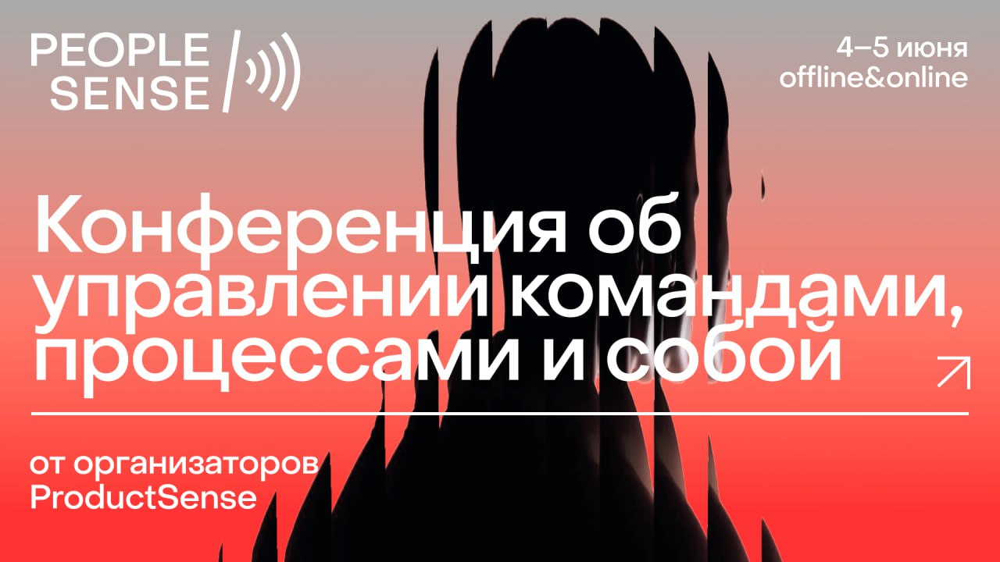

14 категорий, 132 навыка, 3 уровня
обновлено 28.05.2026
Команда PeopleSense — ежегодной конференции по управлению командами, процессами и собой, поставила перед собой вопрос: "Мы готовим конференцию для руководителей и о руководителях раз в год, а как в ежедневной рутине руководителю развиваться самостоятельно? Какие есть запросы рынка? А критерии успеха? Какие навыки необходимы, чтобы рост стал нелинейным (или линейным, но просто очень успешным)"
Немного любопытства и изучение популярных теорий и мнений помогли нам собрать интерактивную карту навыков руководителя на 2026 год. Изучайте, комментируйте, забирайте к себе в копилочку. А чтобы все эти знания и навыки применять — приходите на нашу конференцию 4-5 июня, будем развивать и закреплять многие из этих навыков на практике. Билеты и расписание — на сайте.
